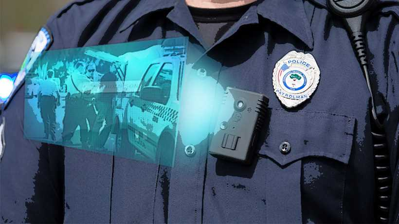
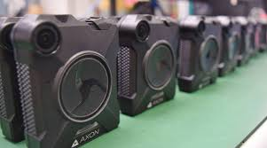
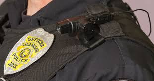

All around the world, there are types of dangers in the police force that can most likely lead to possible unjustified blame on an unfortunate officer for something he could not prevent or false accusation. In order to contradict these accusations, police officers should be required to wear body cameras to counter such claims. Primarily it is police training – honed over decades – that prevents a police officer from fighting or running away. Techniques like role play introduce scenarios to the brain in a controlled , a safe environment so when a similar scenario occurs on the job, the police officer is more likely to act in a proportionate, measured, legal and professional manner.
Police body cameras use audio and visual data. They also use the date and time stamps as well as GPS coordinates to track when and where the police individual was at the time. The cameras also record videos and pictures to keep track of what happened. The data is consumed through listening through audio or watched frame by frame through a video player. A data storage security concern might be the camera is destroyed or deactivated, failing to receive any sort of data the camera might catch. The camera can also run out of power in any type of situation also failing to receive any type of data.
  
Some problems regarding the use of Police Body Cameras
The body cameras are not exactly waterproof and they are expensive to replace. These body cameras can also be considered an invasion of certain privacy if used at the wrong place and at the wrong time. That said, the cameras are not useless. They just serve a different purpose: rather than changing ingrained behaviors, they illuminate them for police and public scrutiny. Well-led police departments shape ingrained behaviors in their officers in two ways. Specialist training in communication, self-defense and firearms are intended to increase a police officer’s capacity to make the right decisions and actions under pressure. When a police officer uses force, the situation is often tense, Adrenaline is running high, and the instinctive responses of fight or flight kicks in.
| TITAN | TAZER | VIEVU | |
|---|---|---|---|
| Body Camera | $350 | $400 | $200 |
| Monthly Warranty Cost | $0 | $109 per month,per unit | $55 per month,per unit |
| Storage Fees | $72,500 for K2 unit, software and server | $0.12-$.99/gigabyte | $125/terabyte per month |
| Training Costs | $0 | Not Included | Not Included |
| Licensing | $0 | Varies | Varies |
| Average 5 year cost for 50 officers | $90,000 | $347,000+ | $175,000+ |